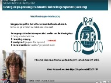
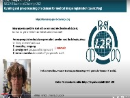

MICCAI Educational Challenge 2021 Materials
Maier Unleashed - Review Rant - Part 1
Andreas Maier
Friedrich-Alexander-Universität Erlangen-Nürnberg
Andreas Maier
Friedrich-Alexander-Universität Erlangen-Nürnberg
How to use Dwave Quantum Annealer & example of network optimization for brain or protein networks
Alex Crimi
Sano, Center for Computational Medicine
Alex Crimi
Sano, Center for Computational Medicine
A discovery dive into the world of evaluation — Do’s, don’ts and other considerations
Annika Reinke, Minu Tizabi, Carole Sudre
German Cancer Research Center, King's College London, University College London
Annika Reinke, Minu Tizabi, Carole Sudre
German Cancer Research Center, King's College London, University College London
Brain MRI Age Classification using Deep Learning

Vijay Iyer, Sameer Muckatira, Eshan Joshi, Maria Duarte Rosa, Julia Hoerner, Amith Kamath. Mathworks
Vijay Iyer, Sameer Muckatira, Eshan Joshi, Maria Duarte Rosa, Julia Hoerner, Amith Kamath. Mathworks
An interactive introduction to Multiview Learning with Canonical Correlation Analysis and Partial Least Squares using cca-zoo
James Chapman
University College London
James Chapman
University College London
Introducing the generally nuanced DL framework Segmentation Challenge
Sarthak Pati and Siddhesh P. Thakur, et. al
UPenn, TU Munich, TU Darmstadt, Germany Intel Corporation, University of Zurich, University of Edinburgh
Sarthak Pati and Siddhesh P. Thakur, et. al
UPenn, TU Munich, TU Darmstadt, Germany Intel Corporation, University of Zurich, University of Edinburgh
Learning the Effect of Registration Hyperparameters
Andrew Hoopes and Adrian Dalca
Harvard University
Andrew Hoopes and Adrian Dalca
Harvard University
Curating and Preprocessing of a Dataset for Medical Image Registration

Mattias Heinrich
University of Luebeck

Mattias Heinrich
University of Luebeck
Computed Tomography techniques for the evaluation of Intestine
Manjunath K N
Manipal Institute of Technology, India
Manjunath K N
Manipal Institute of Technology, India
Whole-brain Segmentation with FastSurfer - How to create simple, intuitive and understandable tutorials for DL based neuroimaging applications in Colab
Leonie Henschel and Martin Reuter
DZNE Germany
Leonie Henschel and Martin Reuter
DZNE Germany
MEC 2020 Materials
View Teaser Videos For 2020 Finalists-
1st Place!
Introduction to Medical Image Registration with DeepReg, Between Old and New
(Teaser Video)
Nina Montana Brown, Yunguan Fu, Shaheer Saeed, Adrià Casamitjana, Zachary Baum, Rémi Delaunay, Qianye Yang, Alexander Grimwood, Zhe Min, Ester Bonmati, Tom Vercauteren, Matthew J. Clarkson and Yipeng Hu - University College London, InstaDeep & King's College London -
2nd Place!
An Introduction to SimpleITK
(Teaser Video)
Ziv Yaniv, Bradley C. Lowekamp and David T. Chen - National Institute of Allergy and Infectious Diseases, National Institutes of Health & Medical Science and Computing LLC. -
3rd Place!
How to Organize a Challenge –- Behind the Scenes
(Teaser Video)
Annika Reinke, Matthias Eisenmann, Laura Aguilera Saiz, Sinan Onogur, Leonardo Antonio Ayala Menjivar and Peter Maximilian Full - German Cancer Research Center (DKFZ) & University of Heidelberg -
Finalist
Guitar and Musical MRI Concepts
(Part 2)
(Part 3)
(Teaser Video)
Jerry J. Battista - Western University -
Finalist
Hands on Machine Learning Training -- HaMLeT
(Teaser Video)
Leon Weninger, Laxmi Gupta and Philipp Gräbel - RWTH Aachen University -
Finalist
The Basic Augmented Reality Demo -- BARD
(Teaser Video)
Matt Clarkson, Steve Thompson, Ester Bonmati, Tom Dowrick, Yipeng Hu and Ann Blandford - University College of London -
Finalist
Medical Imaging with Deep Learning Overview
(Teaser Video)
Joseph Paul Cohen - AIMI, Stanford University and Mila, Quebec AI Institute -
Finalist
AutoBlog: Automatically Converting Research Videos to Blog Posts
(Blog)
(Teaser Video)
Andreas Maier - Friedrich Alexander Universität Erlangen-Nürnberg -
Finalist
Quality Control and Curation of MR Imaging Cohorts via MRQy With Applications to TCIA Datasets
(Paper)
(Teaser Video)
Satish Viswanath, Sadri, AR, Janowczyk, A, Zou, R, Verma, R, Beig, N, Antunes, J, Madabhushi, A and Tiwari, P - Case Western Reserve University -
Finalist
Containers For Collaboration: Using Docker to Share Your Software
(GitHub)
(Teaser Video)
Eric Kerfoot - King's College London -
Finalist
nnU-Net : The no-new-Net for Automatic Segmentation
(GitHub)
(Teaser Video)
Prateek Gupta, Kumar T. Rajamani and Mattias P. Heinrich - Indian Institute of Information Technology & University of Lübeck -
Finalist
Data Preprocessing and Augmentation Using TorchIO: A Tutorial
(GitHub)
(Teaser Video)
Fernando Pérez-García - University College London -
Finalist
Deep Learning Classification from Brain MRI: Application to Alzheimer’s Disease
(Teaser Video)
Elina Thibeau-Sutre, Mauricio Diaz-Melo, Alexandre Routier, Didier Dormont, Ninon Burgos and Olivier Colliot - Sorbonne University & Inria Paris -
Project Roadmap for X-Ray Classifiers: MICCAI Educational Challenge
Solace Hussein and Benjamin Duvieusart - St. Peter's College, University of Oxford, Department of Engineering Science -
So you want to learn deep, but you don't have data?
(Blog)
Andreas Maier - Friedrich Alexander Universität Erlangen-Nürnberg -
Introduction to Virtual Circuits
(Part 2)
(Part 3)
(Circuit Simulator)
George Stetten - University of Pittsburgh -
Challenges in radiology image data analysis
KN Manjunath - Manipal Academy of Higher Education -
3 Steps Are All You Need to Achieve SOTA in MICCAI 2020 Thyroid Nodule Segmentation Challenge
Jun Ma - Nanjing University of Science and Technology -
Coding a CNN for Medical Imaging using TensorFlow 2
Esmitt Ramírez - Autonomous University of Barcelona (UaB) -
How to get started with deep learning using MRI data
Divya Gaur - Technical University of Kaiserslautern -
Node-Based Shader Editor for Volume Rendering in WebGL
Víctor Ubieto - University Pompeu Fabra -
Hierarchical Adversarial Domain Alignment (HADA) for Brain Graph Prediction
(GitHub)
Alaa Bessadok - Istanbul Technical University -
Graph Deep Learning
(Blog)
Andreas Maier, Florian Thamm - Friedrich Alexander Universität Erlangen-Nürnberg -
Model Selection, Overfitting and Regulzarization
Roberto Medeiros de Souza - University of Calgary -
To Publish, or Not to Publish
Omri Bar
MEC 2019 Materials
-
1st Place!
Survival Analysis for Deep Learning
Sebastian Pölsterl - Ludwig Maximilians Universität Munich -
2nd Place!
How to structure and write a research paper? / Case study: research paper deconstruction
(Alternate Youku Link,Additional supplementary video, Alternate Youku Link)
Islem Rekik - Istanbul Technical University -
3rd Place!
Project Roadmap for the Medical Imaging Student working with Deep Learning
(PDF)
Camila González - Technical University of Darmstadt -
Finalist
SNAPPY Augmented Reality Tutorial
Stephen Thompson - University College of London -
Finalist
Skin Lesion Classification : An Educational Guide
(PDF)
Soham Mazumder, Tobias Czempiel - Technical University of Munich -
Finalist
BrainPainter visualisation software
(Source code, arXiv Paper)
Razvan Marinescu - Massachusetts Institute of Technology -
Finalist
A beginner’s guide to shape analysis using Deformetrica
(PDF)
Benoit Martin - Inria Paris, Institut du Cerveau et de la Moelle épinière, Inserm, CNRS, Sorbonne Université -
Loss Functions for Medical Image Segmentation: A Taxonomy
Jun Ma - Nanjing University of Science and Technology -
Deep Learning Model Training and Visualization for Spinal Cord Segmentation
King Chung Ho*, Ratna Sagari Grandhi*, William Speier, Corey Arnold - University of California Los Angeles -
BISCAR: a histological image bank of the human cardiovascular system
Claudia Mazo Vargas - University College Dublin and Oncomark, University of Valle, University of Leon -
Automatic Identification of Loose Connective and Muscle Tissue
Claudia Mazo Vargas - University College Dublin and Oncomark, University of Valle, University of Leon -
Automatic Classification of Epithelial Tissue
Claudia Mazo Vargas - University College Dublin and Oncomark, University of Valle, University of Leon -
SNAPPY Tutorial on Software Development for Clinical Translation
Stephen Thompson - University College of London -
Developing the research prototypes to a software product, a case study of medical imaging application
Manjunath K N - Manipal Isntitute of Technology -
Intelligent Edge: Building a Skin Cancer Prediction App with Azure Machine Learning, CoreML & Xamarin
Anusua Trivedi - Microsoft -
Building a Diabetic Retinopathy Prediction Application using Azure Machine Learning
Anusua Trivedi - Microsoft -
Tutorial: Abdominal CT Image Synthesis with Variational Autoencoders using PyTorch
Lasse Hansen, Maximilian Blendowski and Mattias P. Heinrich - University of Luebeck -
Analysis of longitudinal data made easy with Leaspy
Igor Koval, Raphaël Couronné, Stanley Durrleman - Institut du Cerveau et de la Moelle épinière (ICM), Inserm, U 1127, CNRS, UMR 7225, Sorbonne Université, Inria, Hôpital de la Pitié Salpêtrière, Ecole Polytechnique -
Combining the power of PyTorch and NiftyNet
Fernando Pérez-García - University College of London -
A Beginner's Guide For Machine Learning Engineers On Medical Imaging
Varik Hoang - University of Washington Tacoma -
3D U-Net Segmentation
Varik Hoang - University of Washington Tacoma -
The Power of Checkpointing in Medical Imaging
Upasana Bharadwaj - University of California San Francisco
Complete MEI Materials Library
MEC 2019 · MISS 2018 · MEC 2018 · MISS 2016 · MEC 2015 Winners
MISS 2014 · MEC 2014 Winners · MEC 2014-2015 Entries
MISS 2018 Talks
Entire MISS 2018 YouTube playlist- (01) - Andrea Vedaldi Universal, Unsupervised and Understandable Image Representations 1:19:40
- (02) - Daniel Rueckert Introduction into CNNs for medical imaging 1:14:40
- (03) - Daniel Rueckert Deep Learning for medical image reconstruction, super resolution and segmentation 1:17:27
- (04) - Trevor Darrell Adaptive and Explainable Artificial Intelligence 1:27:28
- (05) - Thomas Brox Dense correspondence estimation with deep learning and cross dataset generalization 1:34:22
- (06) - René Vidal Segmental Spatio Temporal Deep Networks for Discovering the Language of Surgery 1:05:24
- (07) - René Vidal Mathematics of Deep Learning part 2 1:06:22
- (08) - René Vidal Mathematics of Deep Learning part 1 45:44
- (09) - Michael Bronstein Geometric deep learning on graphs and manifolds 2:13:35
- (10) - Larry Zitnick The dark ages Object Recognition before Deep Learning 1:19:39
- (11) - Kevin Zhou Deep learning and beyond Medical image recognition, segmentation and parsing 1:15:17
- (12) - Julia Schnabel Medical Imaging meets Deep Learning Introduction and Motivation 25:05
- (13) - Julia Schnabel Medical image quality assessment using deep learning 43:34
- (14) - Ender Konukoglu Using deep learning as priors in generative models for medical image computing 56:31
- (15) - MISS 2018 6:01
MEC 2018 Materials
-
Winner!
Using NiftyNet to Train U-Net for Cell Segmentation
Zach Eaton-Rosen - University College London -
Finalist
BATMAN - Basic and Advanced Tractography with MRtrix for All Neurophiles
Marlene Tahedl - University of Regensburg -
Finalist
3D Reconstruction of CT Colonography Models for VR/AR Applications using Free Software Tools
Soraia Figueiredo Paulo, Nuno Figueiredo, Joaquim Armando Jorge and Daniel Simões Lopes - INESC-ID, Champalimaud Foundation and Universidade de Lisboa -
Finalist
Tutorial for Developing Image-Guided Intervention Modules using 3D Slicer
Golafsoun Ameri and Leah Groves - Western University -
Basics of Image Registration
Iman Aganj - Massachusetts General Hospital, Harvard Medical School -
Volume and Surface Rendering of 3D Medical Datasets in Unity
Soraia Figueiredo Paulo, Miguel Belo, Rafael Kuffner dos Anjos, Joaquim Armando Jorge, Daniel Simões Lopes - INESC-ID -
Medical Image Analysis Laboratory (MIALab): An Educational Approach to Medical Image Analysis using Machine Learning
Fabian Balsiger, Alain Jungo, Yannick Suter, and Mauricio Reyes - University of Bern -
Object-Orientation and Design Patterns
Eric Kerfoot - King's College London -
Let's cook a realistic brain for science
Yiming Xiao -
Semi-automated pipeline for neuroimaging PET/MR visualization and quantification
Fabio Raman - University of Alabama at Birmingham -
A Practical Guide to Statistical Shape Models Featuring Hands-on Examples in CONRAD
Anna Gebhard, Tobias Geimer, Mathias Unberath, Frank Schebesch, Mena Abdelmalek - Friedrich-Alexander-Universität Erlangen-Nürnberg -
Hinge Loss, Support Vector Machines and the Loss of Users
Andreas Maier, Vincent Christlein, Tobias Würfl, Katharina Breininger, Shahab Zarei - Friedrich-Alexander-Universität Erlangen-Nürnberg -
How to build a deep learning framework
Katharina Breininger and Tobias Würfl - Friedrich-Alexander-University Erlangen-Nürnberg
MISS 2016 Talks
Entire MISS 2016 YouTube playlist- (01) - MISS 2016 Favignana Spot 3:15
- (02) - Alison Noble (University of Oxford, United Kingdom) 1:05:14
- (03) - Carsten Rother (Technische Universität Dresden, Germany) 1:14:48
- (04) - Carsten Rother (Technische Universität Dresden, Germany) 46:52
- (05) - William M. Wells III (Harvard Medical School and MIT CSAIL, USA) 1:23:47
- (06) - Ben Glocker (Imperial College London, United Kingdom) 59:38
- (07) - Nicholas Ayache (INRIA, France) 1:39:05
- (08) - Marleen de Bruijne (University of Copenhagen, Denmark and Erasmus MC - University Medical Center Rotterdam, The Netherlands) 1:10:32
- (09) - Marleen de Bruijne University of Copenhagen, Denmark and Erasmus MC - University Medical Center Rotterdam, The Netherlands 50:36
- (10) - Ben Glocker (Imperial College London, United Kingdom) 1:05:35
- (11) - William M. Wells III (Harvard Medical School and MIT CSAIL, USA) 31:35
- (12) - William M. Wells III (Harvard Medical School and MIT CSAIL, USA) 45:50
- (13) - Alison Noble (University of Oxford, United Kingdom) 1:14:15
- (14) - Daniel Rueckert (Imperial College London, United Kingdom) 57:31
- (15) - Daniel Rueckert (Imperial College London, United Kingdom) 48:12
- (16) - Max Welling (University of Amsterdam, The Netherlands) 1:13:38
- (17) - Raquel Urtasun (University of Toronto, Canada) 55:07
- (18) - Ben Glocker (Imperial College London, United Kingdom) 59:57
- (19) - Andrea Vedaldi (University of Oxford, United Kingdom) 1:27:14
- (20) - Raquel Urtasun (University of Toronto, Canada) 1:01:30
- (21) - Andrea Vedaldi (University of Oxford, United Kingdom) 1:04:22
- (22) - Max Welling (University of Amsterdam, The Netherlands) 1:12:43
- (23) - Menarini 2:30
MEC 2015 Winners
ID#2 - Understanding an MRI Pulse Sequence using a Guitar
Dr. Battista
Medical Biophysics as Western University
2nd Prize Popular Vote.
Dr. Battista
Medical Biophysics as Western University
2nd Prize Popular Vote.
MISS 2014 Talks
Entire MISS 2014 youtube playlist- (01) - Mike Brady (University of Oxford, UK) 1:12:58
- (02) - Polina Golland (Massachusetts Institute of Technology, US) 49:30
- (03) - Polina Golland (Massachusetts Institute of Technology, US) 41:56
- (04) - Nikos Paragios (Ecole Centrale Paris, France) 51:31
- (05) - Xavier Pennec (INRIA, France) 1:00:34
- (06) - Nikos Paragios (Ecole Centrale Paris, France) 53:49
- (06 Pt02) - Nikos Paragios (Ecole Centrale Paris, France) 25:57
- (07) - Guido Gerig (University of Utah, US) 1:00:41
- (08) - Xavier Pennec (INRIA, France) 1:05:03
- (09) - Guido Gerig (University of Utah, US) 53:00
- (10) - Herve Delingette (INRIA, France) 1:39:04
- (11) - Antonio Criminisi (Microsoft Research, Cambridge, UK) 59:01
- (12) - Antonio Criminisi (Microsoft Research, Cambridge, UK) 50:15
- (14) - Nassir Navab (Technical University of Munich, Germany) 1:12:57
- (13) - Tim Salcudean (University of British Columbia, CA) 48:00
- (15) - Tim Salcudean (University of British Columbia, CA) 47:18
- (16) - Nassir Navab (Technical University of Munich, Germany) 48:08
- (17) - Mike Brady (University of Oxford, UK) 1:10:51
- Miss 2014 - Medical imaging summer school
MEC 2014 Winners
ID3: Your friendly guide to human brain atlases.
1st place Expert Panel
Yiming Xiao and Ian Gerard
Montreal Neurological Institute, McGill University
1st place Expert Panel
Yiming Xiao and Ian Gerard
Montreal Neurological Institute, McGill University
ID9 - Singular Value Decomposition

2nd place Expert Panel
Xiao Huang, Xiao Xue, Judith Zimmermann, Piotr Wojewnik
Technical University Munich
2nd place Expert Panel
Xiao Huang, Xiao Xue, Judith Zimmermann, Piotr Wojewnik
Technical University Munich
ID13 - Statistics on Lie groups for Computational Anatomy
1st place Popular Vote
Nina Miolane, Bishesh Khanal
INRIA Sophia Antipolis
1st place Popular Vote
Nina Miolane, Bishesh Khanal
INRIA Sophia Antipolis
ID11 - Intraoperative Nuclear Imaging

2nd place Popular Vote
Asli Okur, Philipp Matthies, Jose Gardiazabal, Oliver Zettinig, Christoph Hennersperger, Richard Brosig, Nassir Navab
Technical University Munich, Johns Hopkins
2nd place Popular Vote
Asli Okur, Philipp Matthies, Jose Gardiazabal, Oliver Zettinig, Christoph Hennersperger, Richard Brosig, Nassir Navab
Technical University Munich, Johns Hopkins
MEC 2014 & 2015 Entries in Random Order
The entire MEC2014 playlist is available here.
ID#1 - Automatic Segmentation of Interacting Cells

Danna Gurari
Danna Gurari
ID#6 - Going with the Flow - How 3D Printing and Prototype Design can Fight Coronary Artery Disease.
Susann Beier
Susann Beier
ID1 - Motion Artifacts in Computed Tomography

Jerry Battista, Colin Versnick, and Kevin Jordan
Western University
Jerry Battista, Colin Versnick, and Kevin Jordan
Western University
ID2 - 3DMeshMetric video tutorial
Juliette Pera, Francois Budin, Tung Nguyen, Beatriz Paniagua
UNC-Chapel Hill
Juliette Pera, Francois Budin, Tung Nguyen, Beatriz Paniagua
UNC-Chapel Hill
ID4 - Manopt, a Matlab toolbox for optimization on matrix manifolds
Nicolas Boumal
Universite catholique de Louvain
Nicolas Boumal
Universite catholique de Louvain
ID6 - Medical Augmented Reality

Severine Habert and Meng Ma
Technical University Munich
Severine Habert and Meng Ma
Technical University Munich
ID7 - Mutual Information

Andrii Kravtsiv, Burcu Altinkaya, Jun Shen, Yuxiang Gong, Zhengyu Shan
Technical University Munich
Andrii Kravtsiv, Burcu Altinkaya, Jun Shen, Yuxiang Gong, Zhengyu Shan
Technical University Munich
ID8 - Ray Casting

Laura Flores Sanchez, Jihye Jang, Nicola Leucht, Tushar Upadhyah, Tao Ye
Technical University Munich
Laura Flores Sanchez, Jihye Jang, Nicola Leucht, Tushar Upadhyah, Tao Ye
Technical University Munich
ID10 - 5: 3D Craniofacial Quantification of Changes-Compute the Surface Distances using a Color Map

Nicole Pentis, Lucia Cevidanes, Antonio Ruellas, Vinicius Boen, Beatriz Paniagua, Francois Budin, Alexis Girault, Martin Styner, Steve Pieper
University of Michigan, University of North Carolina at Chapel Hill, Isomics Inc.
Nicole Pentis, Lucia Cevidanes, Antonio Ruellas, Vinicius Boen, Beatriz Paniagua, Francois Budin, Alexis Girault, Martin Styner, Steve Pieper
University of Michigan, University of North Carolina at Chapel Hill, Isomics Inc.
ID12 - Discrete Optimisation for Medical Image Registration
Mattias P. Heinrich
University of Lubeck, University of Oxford · More Info
Mattias P. Heinrich
University of Lubeck, University of Oxford · More Info
ID15 - Continuous Spatio-Temporal Atlases of the Asymptomatic and Infarcted Hearts

Pau Medrano-Gracia
University of Auckland
Pau Medrano-Gracia
University of Auckland